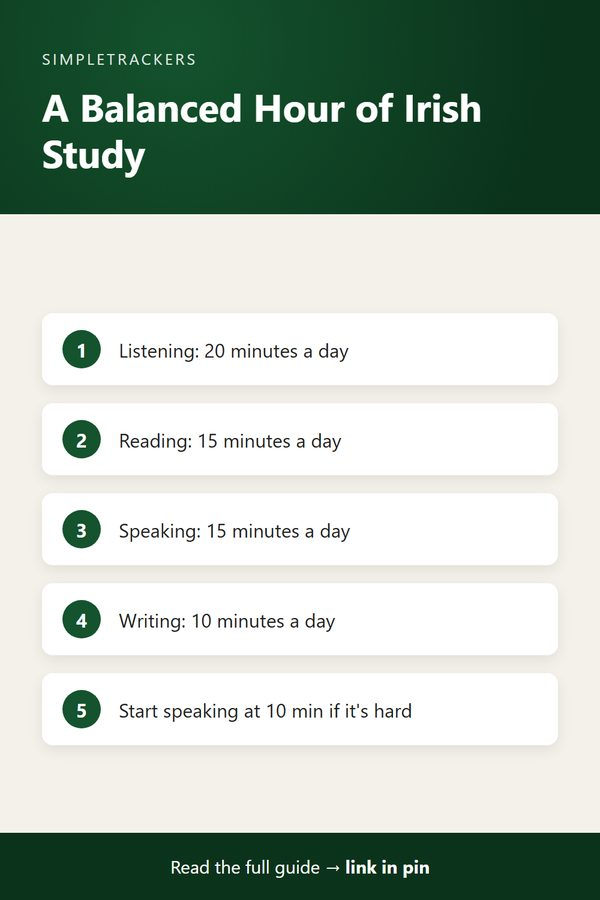

Balancing Four Skills: Why Irish Learners Drift, and How to Recover
← Back to the Complete Irish Gaelic Study Guide
Key takeaways
- Drift is normal: self-taught learners slide toward listening and reading because they feel comfortable, and end up able to understand Irish but not produce it.
- All four skills connect: listening and speaking build fluency; reading and writing build accuracy and depth.
- Mutations need output: writing and speaking show whether you can actually produce lenition, eclipsis and h-prefixing correctly.
- A balanced hour: roughly 20 minutes listening, 15 reading, 15 speaking and 10 writing.
- Track by skill: a log makes drift visible in weeks, not months.
The Drift: Why Learners Specialize Too Early
Ask a group of Irish learners to audit their study hours, and you'll see a pattern. Most will have tilted heavily toward listening or reading. They'll have consumed podcasts, read short stories, or worked through grammar books.
But if you ask them to hold a conversation, they'll falter. If you ask them to write a paragraph, they'll hesitate.
This isn't laziness or lack of effort. It's the natural consequence of how self-study works:
- Listening requires no output. You can play a podcast and feel like you're learning passively.
- Reading offers comfort. It delivers progress without the vulnerability of making mistakes.
- Grammar study feels productive because it delivers rules and structure.
- Speaking and writing demand output. They bring vulnerability, mistakes and immediate feedback that feels uncomfortable.
The comprehension ceiling
Learners drift toward the comfortable skills and neglect the uncomfortable ones. Over time they become imbalanced: able to understand Irish but unable to produce it. The result is a frustrating ceiling where you feel fluent in comprehension but helpless in conversation.
Why All Four Skills Matter
In Irish language learning, the four skills (listening, reading, speaking and writing) are interconnected in ways that matter for genuine proficiency.
| Skill pair | What each does | Together they build |
|---|---|---|
| Listening + speaking | Listening trains your ear to recognize patterns, phonetic shifts and mutations as they happen in speech. Speaking forces you to produce those patterns under pressure, without time to consult a grammar reference. | Fluency: the engine of real-time communication |
| Reading + writing | Reading trains your eye to recognize word forms in context. Writing forces you to construct correct forms yourself, a much harder task than recognizing them. | Accuracy, vocabulary precision and nuance |
| Listening + reading | Both are receptive, but they reveal different things. You might understand written Irish well but struggle with native speakers' pace and accent, or follow podcasts but stumble on unfamiliar texts. | Comprehension through both channels |
| Speaking + writing | Both are productive, and both reveal gaps in your active knowledge. You might speak confidently but use incorrect grammar, or write carefully but realize your active vocabulary is small. | Exposure of different weaknesses |
The Irish Mutation Challenge
Irish learners face a particular complication: mutations. The language's lenition, eclipsis and h-prefixing rules mean that words transform based on grammatical context. A word might appear as "bean" in one sentence and "bhean" in another.
These changes are crucial for correct speech and writing. But learners who focus only on listening might recognize both forms passively without understanding the rule. When they try to produce Irish, they use incorrect forms.
- Writing practice forces you to consciously produce the correct mutation in context.
- Speaking practice reveals whether you're applying these rules automatically or still translating them mentally.
Neither skill alone is sufficient; both must be practiced.
A Balanced Routine: By the Numbers
If you're studying Irish for one hour per day, how should you divide that time? Here's a sustainable breakdown for a general self-study learner:
| Skill | Minutes | Ideas |
|---|---|---|
| Listening | 20 | Podcasts, audiobooks, YouTube channels, music |
| Reading | 15 | Graded readers, news sites, social media, short stories |
| Speaking | 15 | Language exchange partners, voice recording and self-feedback, reading aloud, narrating your day in Irish |
| Writing | 10 | Journaling, forum posts, language exchange messages, vocabulary sentences |
A guideline, not a law
If speaking practice feels genuinely painful early on, start with 10 minutes and gradually increase it. The point is ensuring all four skills get regular attention, not living forever in the comfort zone of listening and reading.

How to Start Speaking and Writing
If you've drifted toward listening and reading, rebalancing requires overcoming discomfort. Here's how to start:
- Start speaking from scratch. Use language exchange platforms like Tandem or ConversationExchange to find Irish speakers willing to trade language practice. A 15-minute session with a native speaker, even with terrible grammar, accelerates your speaking more than months of solo practice. Alternatively, record yourself speaking and post it to language-learning communities for feedback.
- Start writing from scratch. Keep a simple notebook and write three sentences a day in Irish about what happened to you. Keep it simple: subjects, verbs, objects. Don't worry about mutations or perfect grammar; just produce output. Share your writing in forums or with language partners and ask for corrections.
- Graduate the difficulty. Begin speaking with familiar topics and simple sentences. Don't aim for eloquence; aim for accuracy. Do the same for writing: stick to present tense and familiar vocabulary until your confidence grows.
Tracking Balance Reveals Drift
This is where tracking your study time by skill becomes powerful. When you log thirty minutes of listening daily but haven't spoken Irish in two weeks, the log makes this imbalance visible.
You can adjust your routine immediately rather than discovering six months later that you've specialized into a dead end.
The Irish Gaelic Self-Study Progress Tracker is designed to track time spent on each of the four skills. Use it to:
- Monitor your balance.
- Adjust your routine if one skill is neglected.
- Prove to yourself that you're building comprehensive proficiency, not just passive comprehension.
Start today
What did you do last week in speaking practice? What about writing? If either is near zero, plan one speaking or writing session for today. Track it. Then do the same tomorrow. In a month, you'll have built a more complete and genuinely powerful understanding of Irish.
Get started with the Irish Gaelic Self-Study Progress Tracker at https://kimnet8.gumroad.com/l/kanmzp.